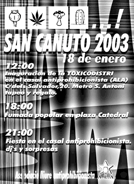

|  |
Avui,
18 de gener,
és Sant Canut, la festa dels fumadors de 'maria'
Ja
comença a ser tradicional en el calendari litúrgic del nostre país la
data de
Sant
Canut, instaurada fa alguns anys pels col·lectius
pro-legalització
de la marihuana de Barcelona.
La jornada, enguany (2003) compta amb tres actes
principals, com són la inauguració de la Toxicodistri al casal
de l'Associació
Lliure Antiprohibicionista (ALA), al migdia;
la fumada popular a la plaça de la Catedral, a les 18.00; i la festa
al casal a partir de les 21.00, amb punxadiscos i sorpreses.
El Sant Canut ve precedit per un any 2002 amb nombroses notícies
positives per a la lluita dels fumadors d'herba a tot el món: el maig
passat es va convocar una jornada
d'acció global a favor de la legalització del cànnabis,
seguida en més de dues-centes ciutats; al juliol,
la Gran Bretanya va despenalitzar el consum de cànnabis, i al desembre,
al Canadà es va posar en marxa un servei de distribució
de marihuana per a finalitats mèdiques a domicili.
Al nostre país, la plataforma Motivats
va anunciar fa pocs dies la intenció de presentar-se a les municipals
per Barcelona amb un programa que inclou la legalització de la marihuana.
|